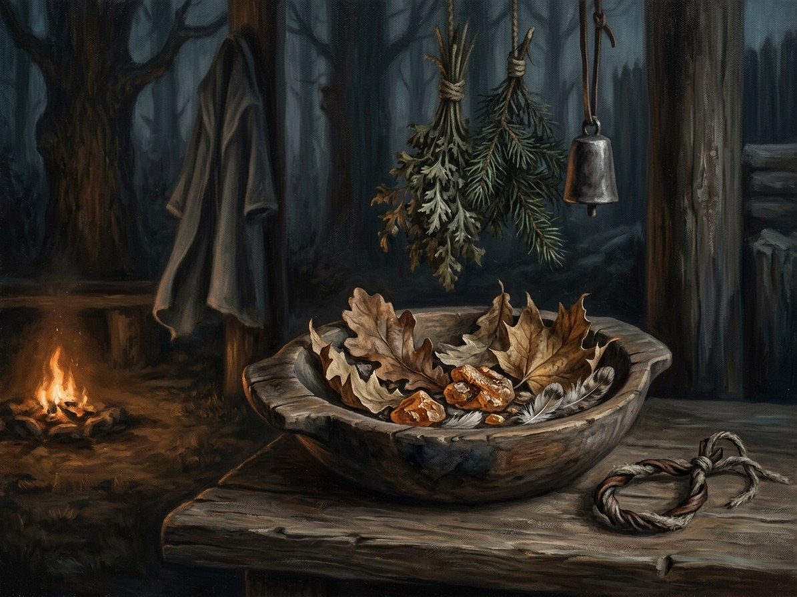

Vėjas (Wind)¶
Deity & zenith¶
Deity: Vėjopatis. Incantation: Vėjas tau neš („Wind for you shall carry“), man for oneself. Medium: open air with wind. Zenith: storms and Vėlinės (late October–2 November, when the vėlės travel): cost halved; doubled in caves and still air.
Vėjas (Wind)

Vėjas (Wind) · element¶
Tipas |
element |
Incantation |
Vėjas tau neš |
Zenith |
Vėlinės / storms |
Pastaba |
Vėjas (Wind): the element of shadow speed, flight, breath, and swift evasion. |
Boon¶
Shadow Speed and far-speech: fog, swiftness and carried words. The fog is real fog, never an illusion (Law of Truth). It carries speech to the dead through the god and a message across distance, with an amber anchor making distance free.
Minor / major cost¶
Minor: vertigo. Major: loss of voice: only whistling, for days, and permanently with repeated use. In Book VI ch. 16 the cost is small but present: Birutė, casting for Kęstutis before his 1361 capture, leans on the table „as if the ground had become far“. Birutė’s voice fails after the Krėva fog (Book I ch. 14–25), and the vessel’s declining body is the bill. The Five-Voice cost, a little of every price at once, is cumulative (magic rules §4.2).
Limits¶
The White Silence smothers Wind (no sound, no far-speech). It cannot be cast in a cave or still air without doubling. A wind-cast „man“ in Book II ch. 27 helps Vytautas move unseen after a defeat. Without the surety the cost is paid in full.
Uses in the books¶
Book I ch. 11: Birutė at the sea: „Vėjas tau neš… Vėjopati, let the fog be his shield.“ Ch. 14: the Krėva fog, white, thick, real. Ch. 15: the Five-Voice in the swamp. Ch. 25: a thinner fog, her last mortal strength. Book II ch. 27: Vytautas, after Vorskla (Vėjas man neš). Book VI ch. 16: far-listening for Kęstutis (Vėjas tau neš: „I will hear“).
- Element
- Wind · deity Vėjopatis (attested late). Zenith: storms and Vėlinės
- Tier
- Tier 2 (minor, one element) or 3 and up. Birutė's Krėva fog is tier 4 through an amber anchor
- Casting
- Vėjas tau neš aloud. Man for oneself
- Components
- Open air with wind; with an amber anchor, distance is free
- Cost
- Minor: vertigo. Major: loss of voice, only whistling for days, permanent with repeated use
- Duration
- A candle's length to a night: the Krėva fog hid a castle for a night
- Limits
- The fog is real fog, never an illusion. Doubled in caves and still air
- Counters
- The White Silence smothers Wind (no sound, no far-speech); consecrated stone
Shadow Speed and far-speech. Fog, swiftness, carried words. Speech with the dead goes through Vėjopatis.
The Krėva fog. Cast from Palanga through the pebble at Wind's zenith, since the escape falls on the eve of Vėlinės (Book I ch. 14).
Loss of voice. Birutė's voice fails after the Krėva fog (Book I ch. 14-25). The vessel's declining body is the bill.
Without a surety. After 1384 Vytautas pays the full price himself: Vėjas man neš after Vorskla (Book II ch. 27).
Illusion. Forbidden under the Law of Truth. Wind makes real fog, never a false face.
Sąsajos¶
graph LR
el_wind["Vėjas (Wind)"]
kalba["Senovės Kalba"]
vejopatis["Vėjopatis"]
white_silence["Baltoji Tyla (White Silence)"]
kalba -->|Uses element| el_wind
vejopatis -->|Element| el_wind
white_silence -->|Counters| el_wind
style el_wind stroke-width:3px